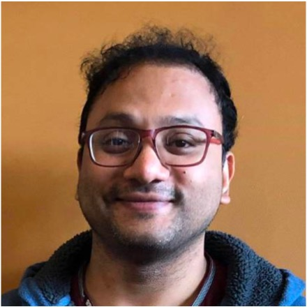
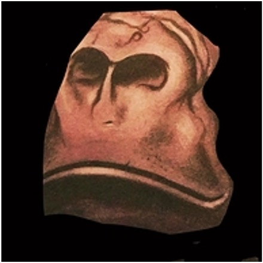
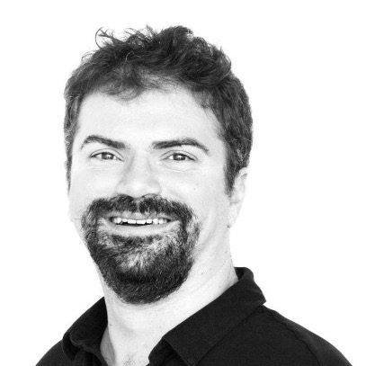
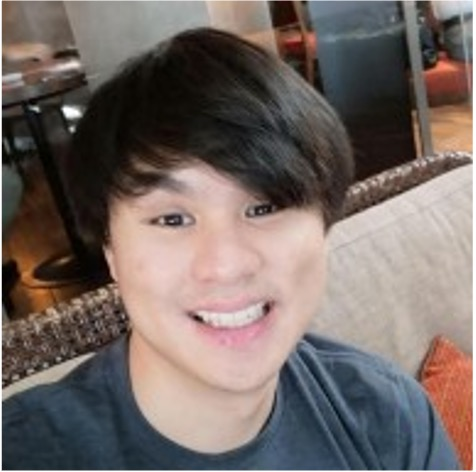

About Us
Founded in 2018, Bangkok.rb aims to grow the community for the Ruby programming language in Thailand! We organize a monthly meetup called Ruby Tuesday in Bangkok, Thailand. We also host the acclaimed RubyConf Thailand attracting speakers and attendees from all over the world.
Team
A big thank you to all of our volunteers who help make our events happen from 2018 to today!
-

Abhinav
-

Andy
-

Alex Timofeev
-

Ajinkya Joshi
-

Cody
-

Dan Itsara
-

Georgi Ker
-

Keith Bennett
-

Masha Egupova
-

Matt Mayer
-
Michael Kohl
-

Olivier Robert
-

Ted
-

Tino Thamjarat
Conference - RubyConf TH
In 2019, we hosted the first RubyConfTH in Bangkok, Thailand. After a enforced break due to COVID, we returned in 2022 with another two-day conference attracting speakers and attendees from all over the world. We plan to return in 2023 for our third conference.

Meetup - Ruby Tuesday

We meet on the last Tuesday of every month in central Bangkok for talks about Ruby and other interesting software development topics! We use Meetup.com to organize our monthly events, so you can find the date of our next meetup there. If you'd like to give a talk, we're always looking for speakers! See the Get Involved section to find out how to suggest a talk.
Get Involved
The easiest way to get involved is to join our Slack group! We post information about upcoming events, and you can ask questions about Ruby and software development in general, as well as volunteering to help out at events
You can also follow us on social media!